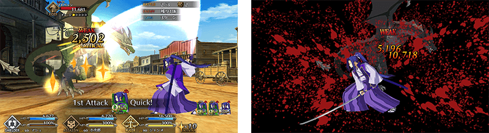
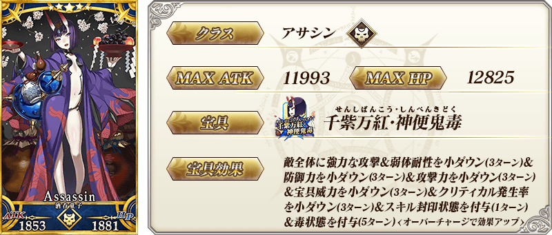
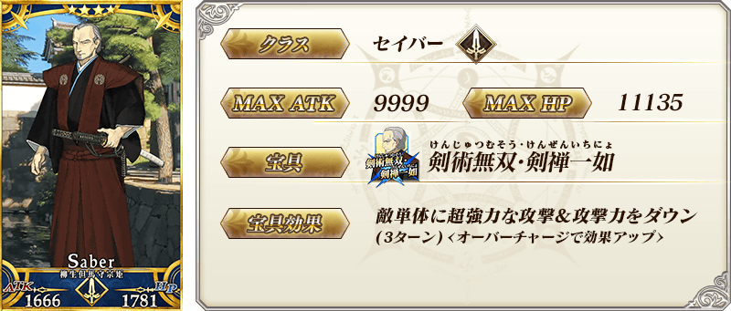
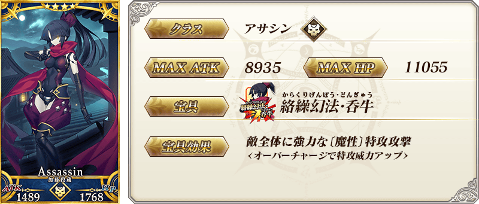
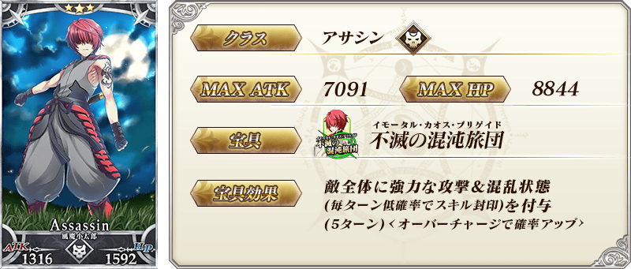
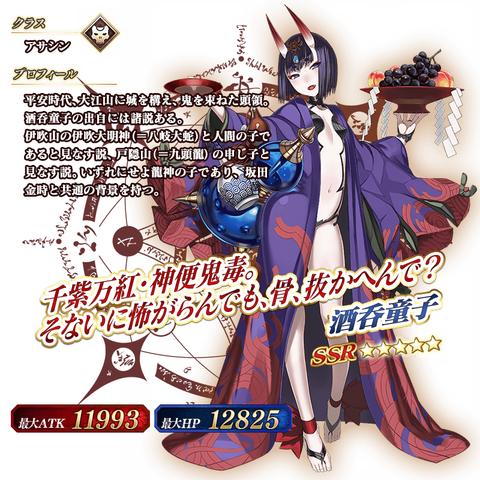
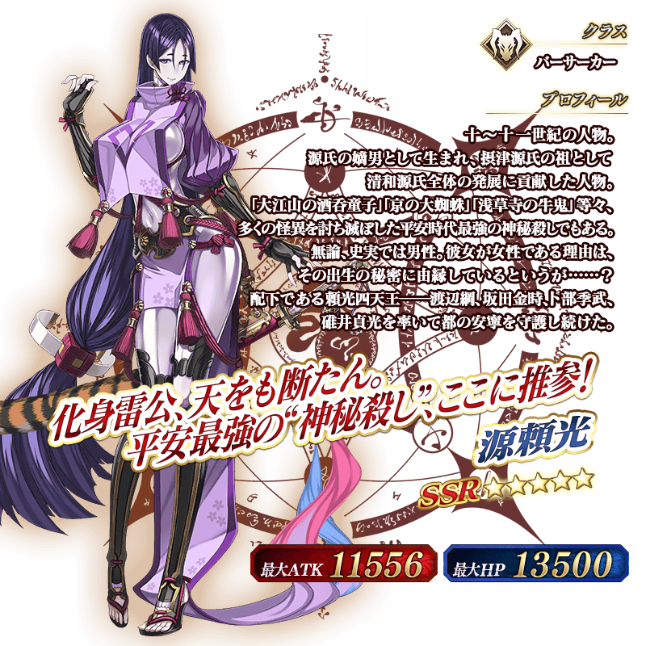
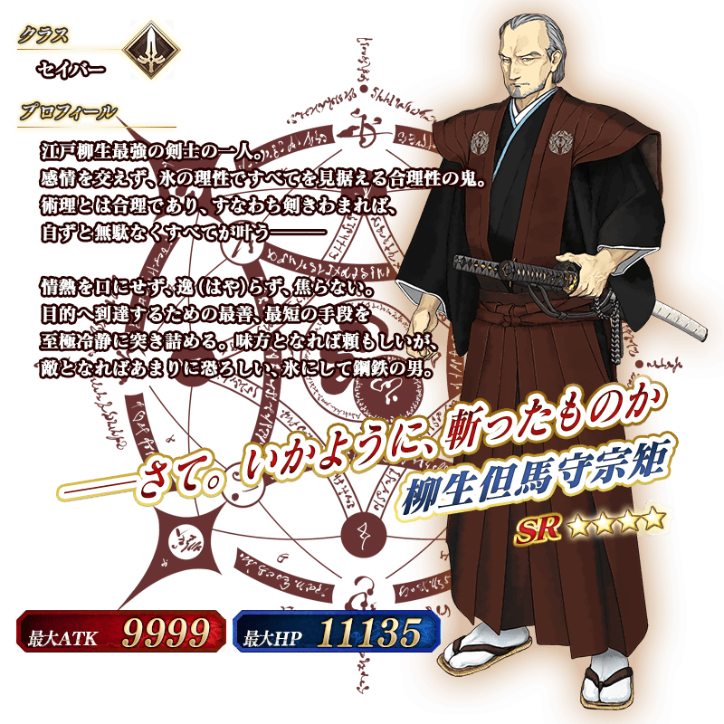
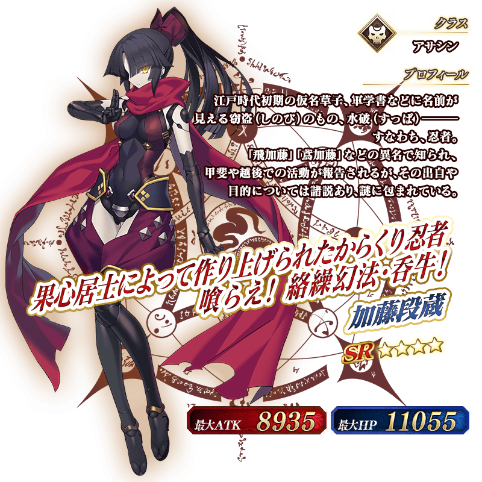

◆「下總國Pick Up2召喚(每日交替)」期間◆
期間:2017年10月20日(五) 17:00～11月1日(三) 11:59
舉辦期間限定「下總國Pick Up2召喚(每日交替)」！
※未到達亞種特異點Ⅲ的狀態也能進行「下總國Pick Up2召喚(每日交替)」。
於「亞種特異點Ⅲ 屍山血河舞台 下總國 英靈剣豪七番勝負」登場的Servant「★5(SSR)酒吞童子」「★5(SSR)源頼光(Berserker)」以期間限定登場！
另外，「★4(SR)柳生但馬守宗矩」「★4(SR)加藤段藏」Pick Up！
上述4位的Servant以每日交替Pick Up，「★3(R)風魔小太郎」常駐Pick Up！
※酒吞童子、源頼光(Berserker)在Pick Up期間結束後，不會追加到故事召喚。
詳情請在聖晶石召喚畫面左下的召喚詳細確認。
Pick Up期間中，期間限定Servant、Pick Up Servant的出現機率提升！
10次召喚中確定1張★4(SR)以上和確定1位★3(R)以上的Servant！
※確定★4(SR)以上包含Servant和概念禮裝。
※所謂「出現機率提升」意指比同稀有度的Servant出現機率更高的設定。
| 每日交替Pick Up期間 | 每日交替Pick Up內容 |
|---|---|
| 10月20日(五) 17:00～ 10月22日(日) 22:59 |
酒吞童子 源頼光(Berserker) 柳生但馬守宗矩 加藤段藏 |
| 10月22日(日) 23:00～ 10月24日(二) 22:59 |
酒吞童子 柳生但馬守宗矩 加藤段藏 |
| 10月24日(二) 23:00～ 10月26日(四) 22:59 |
源頼光(Berserker) 柳生但馬守宗矩 加藤段藏 |
| 10月26日(四) 23:00～ 10月28日(六) 22:59 |
酒吞童子 源頼光(Berserker) 柳生但馬守宗矩 |
| 10月28日(六) 23:00～ 10月30日(一) 22:59 |
酒吞童子 源頼光(Berserker) 加藤段藏 |
| 10月30日(一) 23:00～ 11月1日(三) 11:59 |
酒吞童子 源頼光(Berserker) 柳生但馬守宗矩 加藤段藏 |
※請注意會以每日交替變更Pick Up的Servant。
佐佐木小次郎的戰鬥動作及寶具演出翻新！
◆翻新時間◆
2017年10月20日(五) 17:00～

介紹翻新後佐佐木小次郎的寶具演出！
在Fate/Grand Order官方網站內的公告中，公開了「★1(C)佐佐木小次郎」的寶具演出。敬請確認。
介紹酒吞童子、源頼光(Berserker)、柳生但馬守宗矩、加藤段藏的寶具演出！
在Fate/Grand Order官方網站內的公告中，公開了「★5(SSR)酒吞童子」「★5(SSR)源頼光(Berserker)」「★4(SR)柳生但馬守宗矩」「★4(SR)加藤段藏」的寶具演出。敬請確認。








